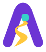

AI PATHВыбирай по задаче
Разные задачи.
Разное устройство сети.
Выбери задачу: схема покажет, что получает модель, как обрабатывает данные и откуда берётся её ответ. Обучение, дообучение и участие в Kaggle →
С нуля? Начнём с Python, затем — с маленькой модели.
Выбрать отдельный курс → После первого эксперимента выберем одну задачу: фото, тексты или звук. Нужен компьютер; подготовку и объём согласуем с наставником.
Понять, как сеть учится
Первый эксперимент после основ PythonКак устроена эта модель
Упрощённая схема: часть нейронов, связей и служебных слоёв не показана. Размеры блоков не означают объём вычислений. Это разбор устройства, не запуск нейросети.01 · Что даём модели
02 · Какая нейросеть
03 · Что получаем
Что будем делать по шагам
Обучи. Проверь. Покажи.
В конце — один воспроизводимый учебный эксперимент, который ты можешь запустить и объяснить.
Файл с кодом + примеры правильных и ошибочных ответов + короткий отчёт о том, что получилось.
На занятиях разбираем данные, обучение и проверку модели. Для готового детектора — применение уже обученной сети.Выбери один проект для старта
Разберём твою подготовку, данные и посильный объём. До начала согласуем стоимость, график и нужные инструменты.